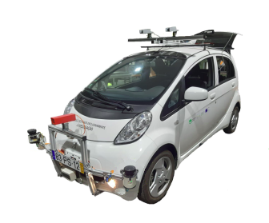
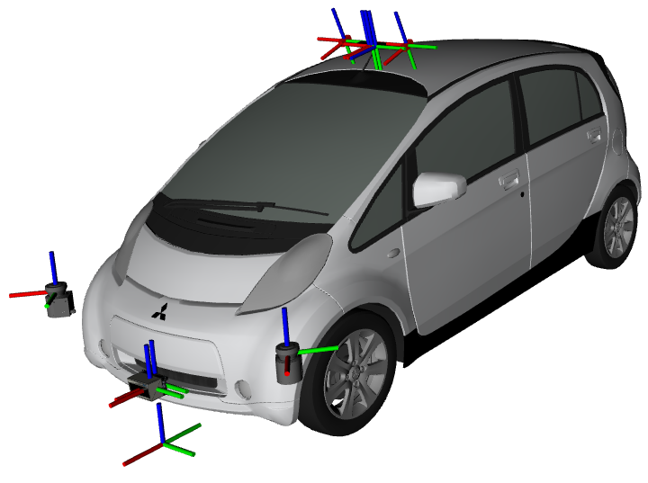
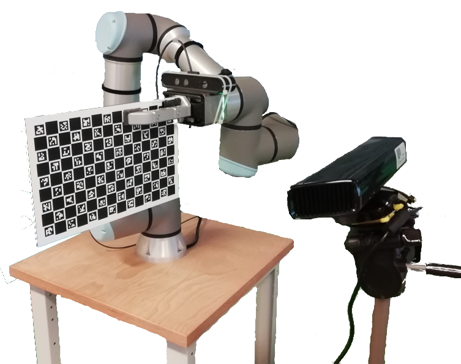
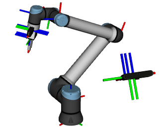
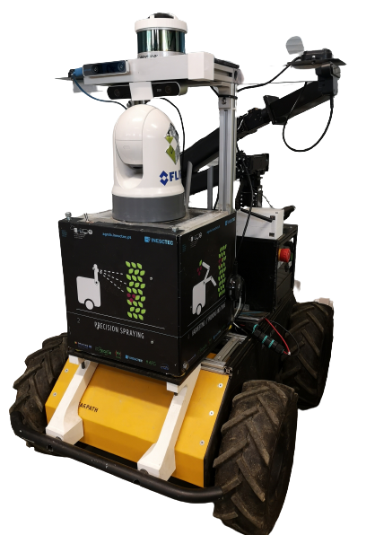
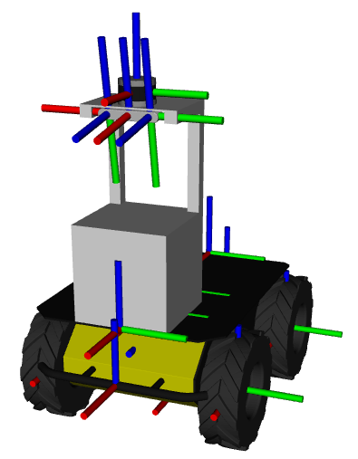
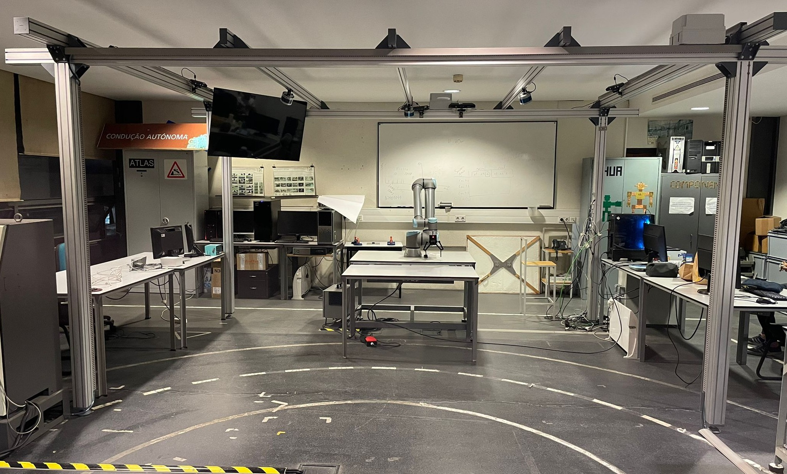
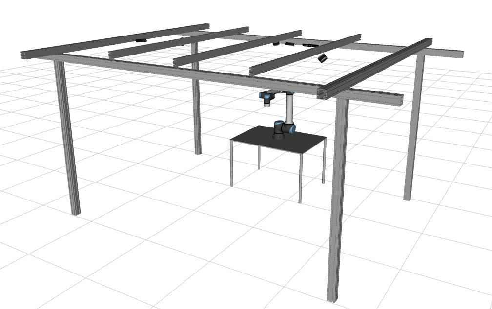
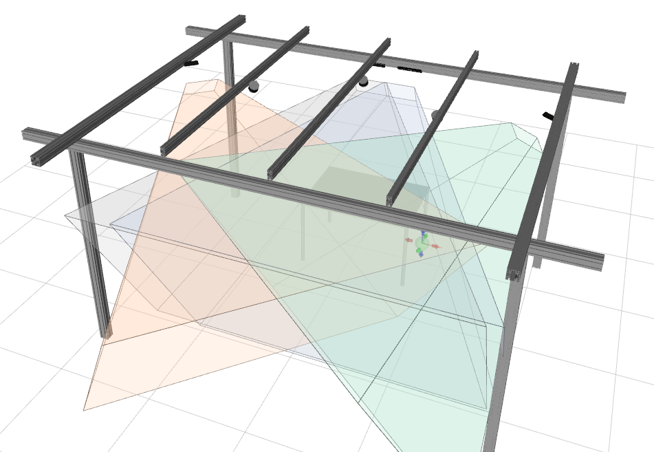
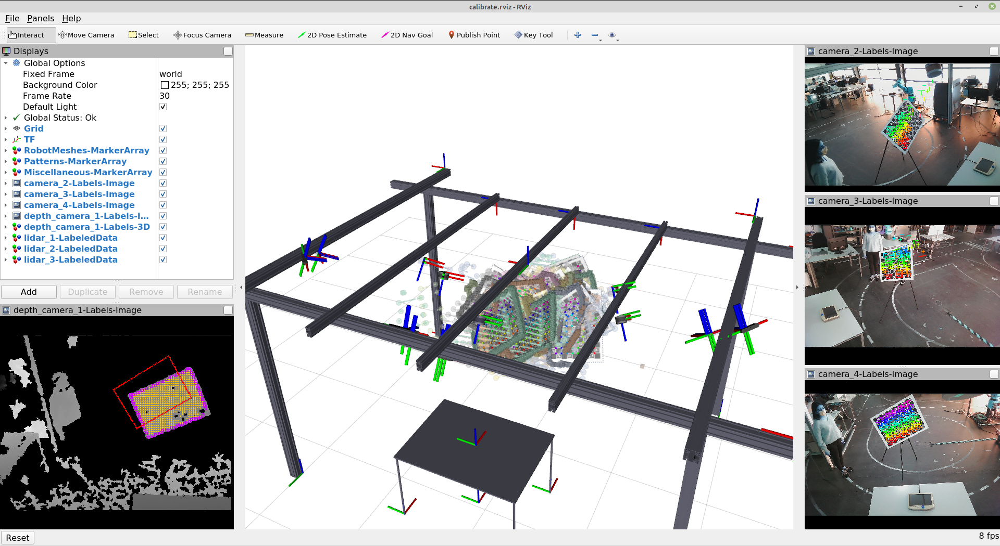

Calibration Examples
ATOM provides extensive visualization possibilities while running the calibration optimization procedure. To visualize in ROS Rviz use the -rv flag.
So far, we have used ATOM to successfully calibrate several robotic platforms. Here are some examples:
MMTBot
MMTBot is a simulated robotic system containing a manipulator, two rgb cameras and one 3D lidar, with the goal of reserching how ATOM can calibration hand-eye systems.

Atlascar2
The Atlascar2 is an intelligent vehicle containing several cameras and 2D Lidars. This was the first platform we have calibrated using ATOM. The repositories containing the atlascar packages are here:
https://github.com/lardemua/atlascar2


Further details on this system can be read in the papers published in ROBOT 2019 and RAS 2020.
IrisUA - ur10e
The IrisUA - ur10e includes several variants of the hand-eye calibration problem. The repositories containing the calibration ros package for this system are here:
https://github.com/iris-ua/iris_ur10e_calibration


Further details on this system can be read in the paper published in T-Ro 2021.
AgrobV2
AgrobV2 is a mobile robot with a stereo camera and a 3D Lidar designed for agriculture robotics.


Further details on this system can be read in the paper published in ESWA 2021.
LARCC
Laboratory of Automation and Robotics Collaborative Cell (LARCC) is included in a research project focusing of collaborative robotic industrial cells. The goal is to monitor in detail the volume of the cell in order to ensure safe collaboration between human operators and robots. For this, several sensors of different modalities are positioned everywhere in the cell, which makes the calibration of this robotic system a challenging task.



